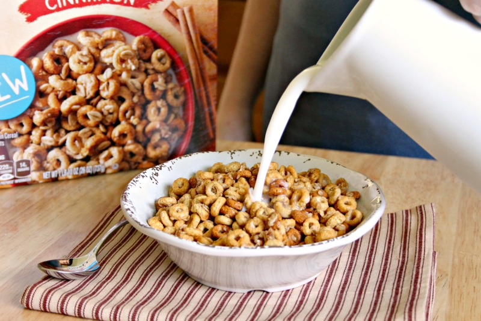

ode
Cheerios with Milk and Raisins

This will start your day, praise Kelloggs
Do you wake up? If you do, then this needs to be the first thing you do today! Make yourself a tasy bowl of cheerios with milk.
Ingredients
- Cheerios
- Milk
- Raisins
- A bowl and spoon
Steps
- Open the box of Cheerios (if you box is already open, you can skip this step
- Tip a generous amount of Cheerios into the bowl, but remember to leave room for some raisnins if you like!
- Open the carton of milk. Don't forget to peel away the seal if it's a new carton!
- Pour some milk on to the Cheerios. Be generous ut don't drown them!
- Optional Add a handful of raisins to inject your cereal with some fruity zest. Think of the raisins as rejected wine grapes.
- Enjoy an energising breakfast and, if you bought Kelloggs, go about your day in the knowledge that you supported one of the worst companies in the world!